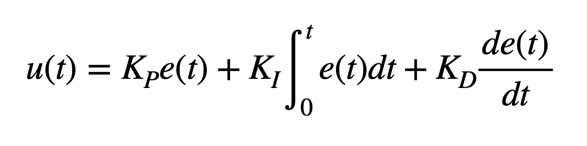

Lab 6: Orientation PID
03.11.2025 - 03.18.2025
Prelab
In this lab, a PID controller is implemented to achieve closed-loop control of the robot's orientation. The IMU was used to measure orientation, and the software would power the motor drivers to turn either left or right to maintain that orientation.
PID Overview
A PID controller consists of three key parts:
These parts together form the PID control equation, which I took from Lecture 7:
This equation calculates the PID input value 𝑢(𝑡) using the error 𝑒(𝑡), which represents the difference between the desired and current values. In this lab, the error corresponds to the difference between the target distance from the wall (1 ft) and the robot’s actual distance. The resulting PID input value directly influences the robot’s speed. Proportional control scales the error by a constant K_p, providing an immediate response. Integral control accumulates past errors by integrating over time and multiplying by K_i, helping to eliminate steady-state error. Derivative control predicts future error changes by computing the rate of change of the error and multiplying by K_d, improving system stability.
Bluetooth
Much of my setup for this lab is similar to Lab 5's setup, as the general idea is the same.
Before starting the lab tasks, I modified my code to make data collection and debugging easier. As such, I added a boolean flag, pid_ori_on, that would keep track of whether or not to use the pid controller. I also added three more command types: START_PID_ORI, STOP_PID_ORI, and GET_PID_DATA_ORI. These would be easily callable using Bluetooth, and helped make running the car and collecting data much more convenient.
The START_PID_ORI case set pid_ori_on to true and initialize the variables needed to implement PID, including the pid index and any error variables. The STOP_PID case sets the pid_ori_on flag to false and stops the car.
case START_PID_ORI:
{
pid_ori_i = 0;
error_ori = 0;
prev_error_ori = 0;
error_sum_ori = 0;
pid_ori_on = true;
break;
}
The third case that I added was GET_PID_DATA_ORI, which returns time, angle, pwm, and error. I implemented this in the same way as in previous labs.
for (int i = 0; i < num_data_msgs; i++)
{
tx_estring_value.clear();
tx_estring_value.append(pid_times[i]);
tx_estring_value.append(",");
tx_estring_value.append(pid_current_angles[i]);
tx_estring_value.append(",");
tx_estring_value.append(pwm_data[i]);
tx_estring_value.append(",");
tx_estring_value.append(pid_err[i]);
tx_characteristic_string.writeValue(tx_estring_value.c_str());
}
The last part of the bluetooth code was on the Python end, where I would receive the data to plot and analyze. I used a notification handler similar to the ones from previous labs.
data = ""
timeArr = []
angle_pid = []
pwm_pid = []
error_pid = []
def notification_handler_pid(uuid, array):
s = ble.bytearray_to_string(array)
data = s
# print(data)
if "," in data:
arr = s.split(",")
timeArr.append(int(arr[0]))
angle_pid.append(float(arr[1]))
pwm_pid.append(float(arr[2]))
error_pid.append(float(arr[3]))
DMP
In the lab handout, it is suggested to enable the digital motion processor (DMP) to allow the IMU to perform real-time calibration and drift correction. This would provide more reliable data. It was previously disabled because it requires 14 kB of additional program memory on the host microprocessor. However, I decided it would be beneficial to re-enable it for this lab, as it is heavily reliant on good IMU data.
To enable the DMP again, I followed the instructions in the lab handout link, and uncommented the line defining ICM_20948_USE_DMP in SparkFun_9DoF_IMU_Breakout_-_ICM_20948_-_Arduino_Library
I also followed the instructions to put in their given code into our setup function:
bool DMP_success = true;
// Initialize the DMP
DMP_success &= (myICM.initializeDMP() == ICM_20948_Stat_Ok);
// Enable the DMP Game Rotation Vector sensor
DMP_success &= (myICM.enableDMPSensor(INV_ICM20948_SENSOR_GAME_ROTATION_VECTOR) == ICM_20948_Stat_Ok);
// Set the DMP output data rate (ODR): value = (DMP running rate / ODR ) - 1
// E.g. for a 5Hz ODR rate when DMP is running at 55Hz, value = (55/5) - 1 = 10.
DMP_success &= (myICM.setDMPODRrate(DMP_ODR_Reg_Quat6, 4) == ICM_20948_Stat_Ok);
// Enable the FIFO queue
DMP_success &= (myICM.enableFIFO() == ICM_20948_Stat_Ok);
// Enable the DMP
DMP_success &= (myICM.enableDMP() == ICM_20948_Stat_Ok);
// Reset DMP
DMP_success &= (myICM.resetDMP() == ICM_20948_Stat_Ok);
// Reset FIFO
DMP_success &= (myICM.resetFIFO() == ICM_20948_Stat_Ok);
// Check success
if (!DMP_success)
{
Serial.println("Enabling DMP failed!");
while (1)
{
// Freeze
}
}
The handout also provided example code for a loop function, which I used in my PID implementation.
PI Control
I began my PID implementation by using both proportional and integral control (PI) using the knowledge we learned from class.
current_time = millis();
float pid_dt = current_time - prev_time;
prev_time = current_time;
icm_20948_DMP_data_t data;
myICM.readDMPdataFromFIFO(&data);
if ((myICM.status == ICM_20948_Stat_Ok) || (myICM.status == ICM_20948_Stat_FIFOMoreDataAvail))
{
if ((data.header & DMP_header_bitmap_Quat6) > 0)
{
double q1 = ((double)data.Quat6.Data.Q1) / 1073741824.0; // Convert to double. Divide by 2^30
double q2 = ((double)data.Quat6.Data.Q2) / 1073741824.0; // Convert to double. Divide by 2^30
double q3 = ((double)data.Quat6.Data.Q3) / 1073741824.0; // Convert to double. Divide by 2^30
current_angle = quaternion_to_yaw(q1, q2, q3);
}
}
error_ori = current_angle - target_angle;
double err_d = (error_ori - prev_error_ori) / pid_dt;
double err_i = err_i + (error_ori * pid_dt);
// Calculate speed control signal
The if statement includes functionality from the DMP's example code, as mentioned above. This function is then called in the main loop, where the data arrays are populated with sensor readings and analyzed. Specifically, the code reads quaternion data from the ICM-20948 IMU sensor. It extracts orientation data, converts it into a usable format, and calculates the yaw angle. This yaw angle is then compared to a target angle to compute an orientation error, which is used in a PID control loop. The error values—including proportional, derivative, and integral terms—are updated to generate a control signal for speed adjustment, ensuring precise motion control.
if (pid_ori_on)
{
int pwm;
pwm = pid_ori(Kp, Ki, Kd, target_angle);
if(curr_time - start_time > 20000)
{
pid_on = false;
drive(0, 0);
}
if (pid_i < num_data_msgs)
{
pid_current_angles[pid_ori_i] = current_angle;
pwm_data[pid_ori_i] = pwm;
pid_times[pid_ori_i] = (float)millis();
pid_err[pid_ori_i] = error_ori;
pid_ori_i++;
}
}
In the main loop, we first check that pid is turned on for orienation. Then, we use the pid_ori function mentioned above to find the new pwm value based on the gains and target angle. A timeout condition is implemented to disable the PID control after 20 seconds by setting pid_on to false and stopping motion using drive(0, 0).